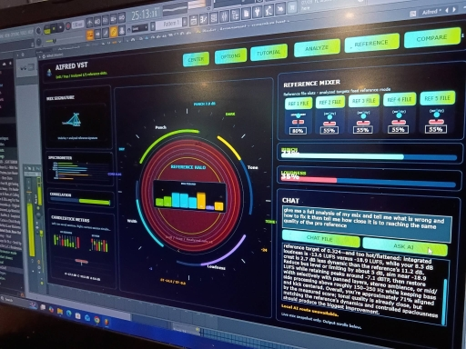
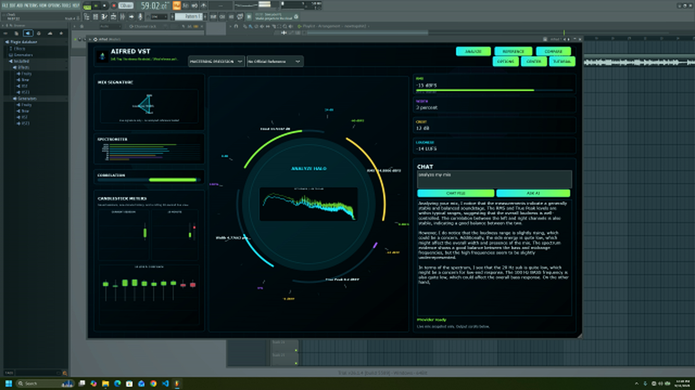

Software at the cutting edge
AI | Audio-Engineering | Computer-Science
AI that leaves the mix up to the ProducerAIFRED VST | OFFICIAL BETA RELEASE | DOWNLOAD FREE
Before I built AIFREDI was just a bedroom producer who had spent 16 years inside FL Studio. I could make music. I could mix. But I could never answer one question: “Why does their record sound professional…" So eventually, I got tired of guessing. I started learning. I started breaking down what was actually happening inside a professional mix. And somewhere along the way, I realized something: 🔥 The biggest difference wasn’t another plugin.
It was FEEDBACK.


AIFRED VST 3.6-Beta
A production tool built to show you what your mix is actually doing.
AIFRED measures the signal coming through the plugin, organizes those measurements, and turns them into a usable picture of the mix.
The Halo is the fast visual read. Behind it is a real DSP pipeline tracking tone, stereo behavior, loudness, dynamics, peaks, punch, density, and reference relationships.
No magic “sounds good” button. No fake meter movement. No AI pretending it heard something it never measured.
AIFRED 3.6 Beta — FREE DOWNLOAD
Download the free Windows Beta below.

Inside AIFRED
A real system behind the interface.
AIFRED is deliberately split into layers. Each layer has one job, and the AI sits at the end of the evidence pipeline—not at the beginning.
01 · DSP Engine
The part that actually measures the audio.
Producer version: This is where AIFRED gets its numbers.
The DSP layer analyzes the audio passing through the plugin and produces the authoritative measurements used by the rest of AIFRED.
02 · BufferHunter
The bridge between realtime audio and intelligent analysis.
Producer version: AIFRED cannot stop the audio engine every time the AI wants to ask a question.
BufferHunter safely collects rolling observations from the realtime DSP path and makes those observations available to the non-realtime intelligence pipeline.
That separation matters. Audio processing stays focused on audio. Analysis and AI can take their time without blocking the plugin's realtime work.
Realtime audio stays realtime. Intelligence gets evidence after the fact.
← Back to architecture
03 · Filter
Not every measurement belongs in every answer.
Producer version: AIFRED doesn't dump the entire analyzer into an AI prompt.
The Filter organizes and smooths the observations, applies the relevant profile and reference context, and selects the evidence that matters to the current question.
That keeps the intelligence layer focused, bounded, and tied to what AIFRED actually knows.
The AI gets the useful picture—not a warehouse of raw numbers.
← Back to architecture
04 · Filtered Mix Context
The contract between audio analysis and AI.
Producer version: Think of this as AIFRED's evidence packet.
The context contains structured information about the measured mix: identity, session state, timestamps, profile, reference information, metrics, spectrum bands, and relevant session context.
The important part is that the AI receives a defined structure instead of having to guess what a pile of numbers means.
DSP truth → structured context → intelligence.
← Back to architecture
05 · Intelligence Host
The AI lives outside the realtime audio path.
Producer version: This is the part that turns measurements into an explanation.
AIFRED's intelligence host is a separate .NET process. It receives the structured context, validates the contract, builds an evidence-focused prompt, and routes the request to the configured model provider.
The model is told to use the supplied measurements exactly. It is not supposed to recalculate DSP, invent missing values, or claim it listened to raw audio.
AIFRED measures. The model interprets.
← Back to architecture
06 · AI Provider
The brain is replaceable. The evidence is not.
Producer version: AIFRED is not built around one magic model.
The provider layer is separated from the audio and intelligence contracts, so compatible hosted or local providers can be used without rebuilding the DSP system.
That means the model can change while AIFRED's measurements remain the authority.
Swap the model. Keep the measurements.
← Back to architecture
System Boundaries
What the AI does not control.
Why AIFRED Exists
Feedback beats guessing.
Professional mixing is full of decisions. The hard part is often knowing what deserves attention first.
AIFRED was built to make that feedback visible: measured signal behavior, reference relationships, and an intelligence layer that can explain what the measurements mean.
Free Online Mix Analyzer
Get a quick read before you open the full plugin.
The browser analyzer is a first-pass direction check. It is not a replacement for AIFRED's native DSP pipeline.
- loudness
- tonal balance
- stereo behavior
- general mix translation
Connecting to the reference pool…
No mix loaded
Drop in a file, run the analysis, and get a quick read on where your mix stands.
The browser analyzer runs locally and does not upload audio or claim native AIFRED DSP measurements.
North3rnLight3r Beat Catalog
Preview the catalog. License the record-ready ideas.
The player uses the audio already packaged with this site.
Now playing
Select a beat
BPM and style will appear here.
North3rnLight3r
Software, music, and production.
Mixing and Mastering
Pay for quality, not for time.
Mixing and mastering services are charged by the project, with the goal of getting the record where it needs to be.
Send an InquiryContact
Contact North3rnLight3r.
For AIFRED, beat licensing, mixing, mastering, production, or general inquiries.